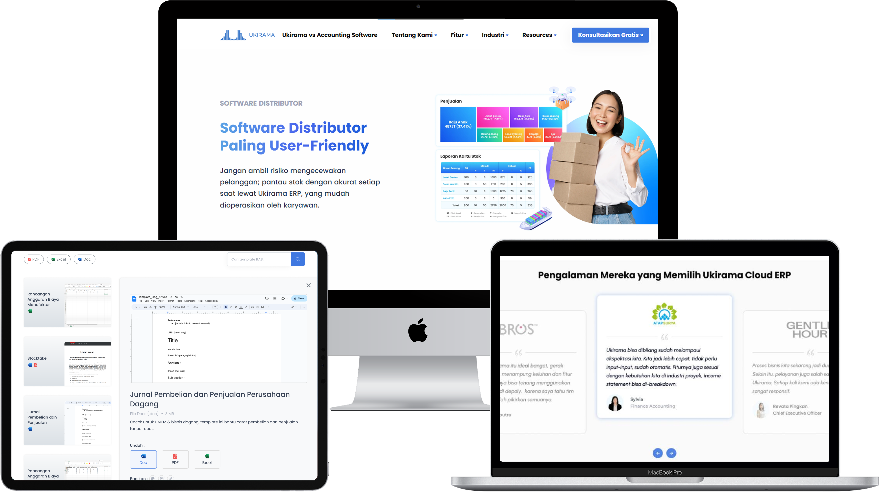
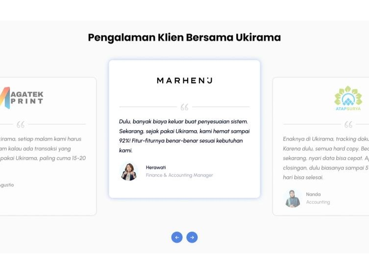
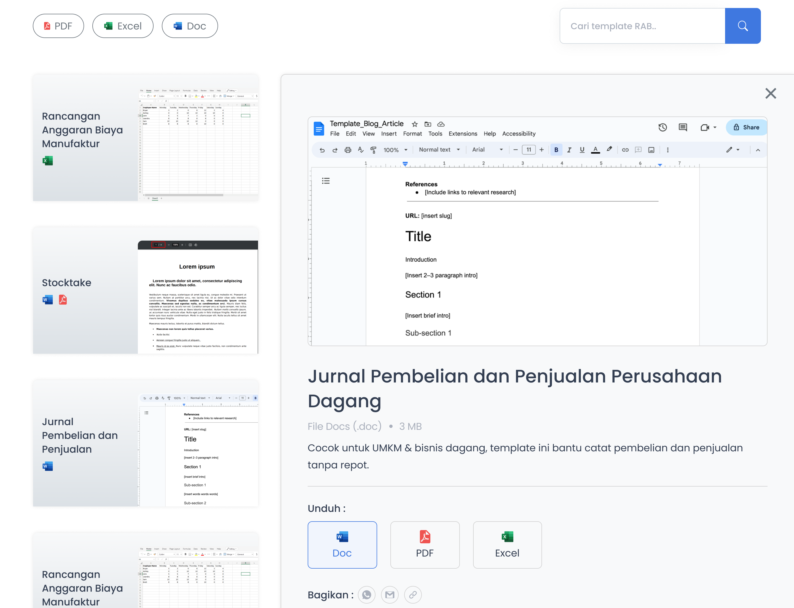
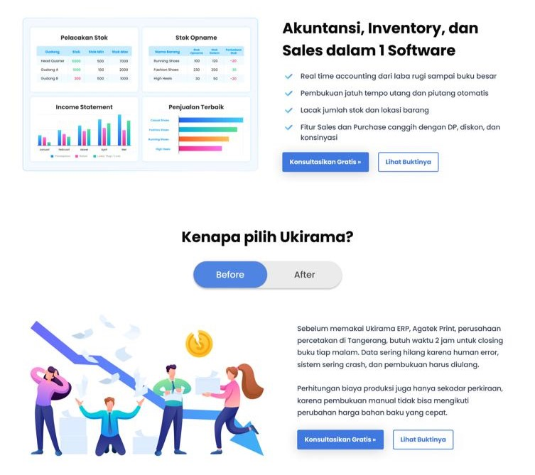
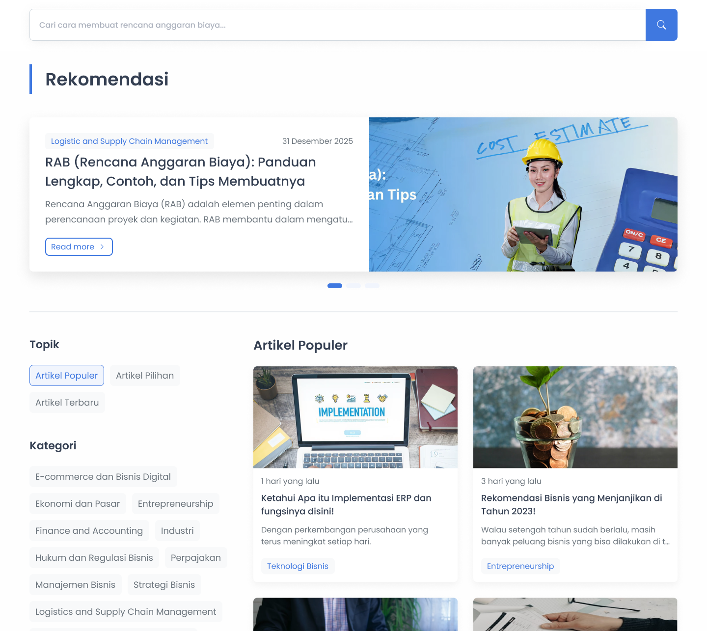

Ukirama Site & ERP
Designing the company website, the ERP, and the design system behind the website.
- Role
- UI/UX Designer
- Timeline
- February - August 2025
- Stack
- Figma · Notion · Attention Insight
- Outcome
- 15+ pages · 2 ERP modules

About the project
Ukirama is a software company that builds ERP for Indonesian businesses. From February to August 2025, I worked as a UI/UX Designer Intern on three things: the company website, the modules inside the ERP, and the design system for the website. I collaborated across Engineering, Business, and SEO teams to optimize the website for maximum user conversion.
The challenge
The website and the ERP each had their own challenge. For the company website, I couldn’t design only for looks. It also had to be easy for developers to build and good for SEO, so I had to check these from the start. For the ERP, each page had to show a lot of information at once. The challenge was to keep a clear hierarchy so the pages didn’t feel heavy or crowded.
How I worked
- Started from the requirement. I discussed with the business team or the SEO team to understand the background of each page, its goals, and who it’s for.
- Did competitor research. Analyzed similar products to identify effective page structures and design patterns that align with user needs.
- Designed and tested the pages. I used Attention Insight AI to check heatmaps, attention, and clarity of my layouts, so discussion sessions were based on where the eye goes, not on personal taste.
- Created design documentation. Documented design specifications and the reason behind each design decisions for internal knowledge sharing and provide clear guidance for the development team.
- Checked the build on staging. After development, I did a UI/UX check on staging and worked with the developers on every design feedback.
What I designed
I designed 15+ pages for the Ukirama website and 2 ERP feature modules. These are the four pages I’d like to highlight:
- Testimonial section: Shows feedback from real customers, so visitors can see that other businesses already use Ukirama.
- Template page: Provided downloadable business templates that users can easily customize and use for their needs.
- Comparison page: Helped visitors understand the benefits of our product and compare its features with other ERP solutions.
- Blog page: A page for Ukirama’s articles, designed so readers can browse and find posts easily.




Outcome
The work is live at ukirama.com ↗, and the internship was featured by the company on LinkedIn ↗.
Whether it’s a website or an ERP, a good documentation make a page easier to hand over. What I took from this project: I learned to design with the whole team in mind, from business and SEO to developers, not only for what looks good.
What's next
Let’s work together.
I’m open to UI/UX design roles and collaborations. Let’s talk about how I can contribute.